AG Viewer Manual
Copyright Notice
Copyright © 2016-2021, Bitnine Inc. All Rights Reserved.
Restricted Rights Legend
PostgreSQL is Copyright © 1996-2021 by the PostgreSQL Global Development Group.
Postgres95 is Copyright © 1994-5 by the Regents of the University of California.
AgensGraph is Copyright © 2016-2021 by Bitnine Inc.
Permission to use, copy, modify, and distribute this software and its documentation for any purpose, without fee, and without a written agreement is hereby granted, provided that the above copyright notice and this paragraph and the following two paragraphs appear in all copies.
IN NO EVENT SHALL THE UNIVERSITY OF CALIFORNIA BE LIABLE TO ANY PARTY FOR DIRECT, INDIRECT, SPECIAL, INCIDENTAL, OR CONSEQUENTIAL DAMAGES, INCLUDING LOST PROFITS, ARISING OUT OF THE USE OF THIS SOFTWARE AND ITS DOCUMENTATION, EVEN IF THE UNIVERSITY OF CALIFORNIA HAS BEEN ADVISED OF THE POSSIBILITY OF SUCH DAMAGE.
THE UNIVERSITY OF CALIFORNIA SPECIFICALLY DISCLAIMS ANY WARRANTIES, INCLUDING, BUT NOT LIMITED TO, THE IMPLIED WARRANTIES OF MERCHANTABILITY AND FITNESS FOR A PARTICULAR PURPOSE. THE SOFTWARE PROVIDED HEREUNDER IS ON AN ”AS-IS” BASIS, AND THE UNIVERSITY OF CALIFORNIA HAS NO OBLIGATIONS TO PROVIDE MAINTENANCE, SUPPORT, UPDATES, ENHANCEMENTS, OR MODIFICATIONS.
Trademarks
AgensGraph® is a registered trademark of Bitnine Global Inc. Other products, titles or services may be registered trademarks of their respective companies.
Open Source Software Notice
Some modules or files of this product are subject to the terms of the following licenses. : OpenSSL, RSA Data Security, Inc., Apache Foundation, Jean-loup Gailly and Mark Adler, Paul Hsieh’s hash.
Information of technical documentation
Title : AgensGraph Operations Manual
Published date : 08 11, 2021
S/W version : AG Viewer Manual
Technical documentation version : v1.0
1. Introduction
1.1. Introduction to AG Viewer
AG Viewer is a user interface that provides visualization of data loaded in AgensGraph through a web browser.
1.2. System Requirement
Browsers that support ES6, such as Chrome, Edge, Safari, Firefox, etc.
2. Installation
2.1. Environment Setting
Node.JS (Version 14.x.x or higher)
NPM (Version 6.x.x or higher)
Required Package
pegjs, express, npm-run-all (command: npm -g install pegjs, express, npm-run-all)
2.2. Installation and Startup
2.2.1. Setup and start using command
$npm run setup
$npm run start
2.2.2. Set up and start using docker
Install docker in advance https://www.docker.com/get-started, install the version compatible with your OS from the provided link.
Run the command below
$docker run -d \
--publish=3001:3001 \
--name=agviewer \
bitnine/agviewer:latest
Once installation is completed via docker, run the container.
$docker ps -a
3. Screen Layout
3.1 Initial Screen
 In the initial screen, a server connect frame for connecting to the database appears.
In the initial screen, a server connect frame for connecting to the database appears.
Components of Server Connect Frame
connect url
connect port
database name
graph path
username
password
When the database is connected, an alert indicating the success of the database connection to the server status frame is displayed.

If the database connection fails, a connection failure alert appears.

3.2. Main Frame
3.2.1. Graph Frame

The graph frame visually shows the searched data. The screen is largely divided into a query editor and a frame.
Query Editor

Query Editor is a text box for entering cypher queries or special commands. Special commands are in the format of ‘:(colon) command’, and the special commands currently supported by AG Viewer are as follows: - :play northwind : A tutorial showing how to create and inquire data through a northwind dataset. - :server connect : Create a frame to connect to a database server. If it is already connected to the database, an alert indicating that it has already been connected is displayed. - :server status : Create a frame indicating the database connection status. If not connected to the database, a guide to connecting to the database is provided. - :server disconnect : Disconnect the database connection. After disconnecting the database, an alert indicating that the connection has been disconnected is displayed.
Run Query

This button runs a cypher query or special commands.
Resizing Editor

Resize the window by dragging the edge of the Query Editor.
History
 Enter CTRL + ↑ or CTRL + ↓ to reload a previously viewed query.
Enter CTRL + ↑ or CTRL + ↓ to reload a previously viewed query.
Frame
 The frame is a space where the result of the query entered in the Query Editor is shown. The frame format is provided in the form of a graph and table. The default format is graph.
The frame is a space where the result of the query entered in the Query Editor is shown. The frame format is provided in the form of a graph and table. The default format is graph.
The components of the graph frame are as follows:
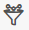 :Filter: specify the node that needs highlight in the query result.
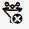 :Remove Filter: Removes the applied filter condition.
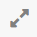 :Maximize Frame: Maximize the size of the frame.
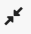 :Resize Frame: Returns the maximized frame to its original size.
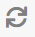 :Refresh Frame: Reload the frame to its initial inquiry state
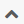 :Fold Frame: Minimize the frame.
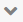 : Open Frame: Returns the minimized frame to its original size.
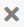 : Close Frame: Close the frame.
3.2.2. Frame format
Graph frame format type
There are a total of two formats that show the data. The default format is shown in graph. 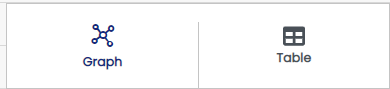
Components of Graph Format

①Node list, vertex selector: This is a list of set properties representing nodes displayed as a result of the query and is represented by the label name of the node. When each property is selected, all nodes corresponding to the label are selected, and color, size, and caption can be edited in ⑦.
②Edge list, edge selector: This is a list of set properties representing edges displayed as a result of the query and is represented by the label name of the edge. When each property is selected, all edges corresponding to the label are selected, and the color, size, and caption can be edited in ⑦.
③Selecting frame format: Select either graph or table format to view the current frame.
④Graph frame:A screen that displays data in node and edge as a result of the query. When clicking each node, a unique ID of the selected node and property information of the node is displayed in ⑤Likewise, when clicking an edge, a unique ID and property information of the selected edge is displayed.
⑤Information display window: Summarizes the query result shown on the frame. The result shows the number of nodes and edges, including the information of the selected property in the frame.
⑥Graph frame layout setting: Change the layout of the frame. The layout arrangement of node/edge can be changed. A total of 12 layouts are provided, and cose-bilkent is used as a default. The layout types are as follows: - random - grid - breadth-first - concentric - cola - cose - cose-blikent - dagre - klay - euler - avsdf - spread
⑦Change graph frame chart property: Edit and change the selected property, and features are as follows: - Change chart properties of node/edge - Change color, size, caption - A caption is a property and cannot be used more than 2 - Chart properties changed in the frame do not affect other frames
Handling graph frame
Screen in ④ can be moved by dragging an empty space with a mouse.
When selecting and right-clicking a node, 4 additional menus appear. The details of the features are as follows:

- ① Fixed/Return node: Relocates the node to the position at the time of initial inquiry - ② Close menu: Closes the opened menu - ③ Expand node: If there is a node connected by an edge to the corresponding node, add the adjacent node and edge to the graph frame. - ④ Hide node: Remove a node from the graph frame. (Actual data is not deleted) If there is a node connected by another node with an edge, only the edge is removed.
Multi-selecting nodes 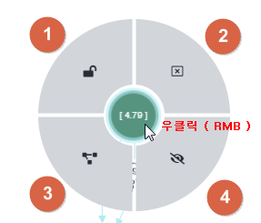 When double-clicking a node, multiple adjacent nodes connected to the edge of the corresponding nodes are selected. When a node double-click is repeated, it is possible to additionally select nodes linked to more edges through the edge relationship. All selected nodes can be dragged with a mouse.
Table format

① Header: Header of the executed query result. Alias name specified as Alias in the query is displayed as a header.
② Result: Executed query results are displayed.
Menubar
Database Information and Configure can be selected on this screen.
 - Node Label , Edge Label , Properties Label
- Node Label , Edge Label , Properties Label
When the database is successfully connected, the summary information of the node, edge, and properties within the database will be displayed as buttons on the menu bar. Clicking the button will automatically enter the query in the Query Editor, and the formats in which the query is created are as follows:
- node label: MATCH (V) WHERE LABEL(V) = label name RETURN V
- edge label: MATCH (V)-[R]->(V2) WHERE LABEL(R) = label name RETURN V
- node property: MATCH (V) WHERE V.PROPERTY IS NOT NULL RETURN V</br>
- edge property: MATCH (V)-[R]->(V2) WHERE R.PROPERTY IS NOT NULL RETURN V
Description of Buttons and Features
① Show/Hide Menubar: A toggle button to hide or show the menu bar.
② Refresh: Refresh information of nodes, edges, and properties.
③ Close Session: Close currently connected DB session.
Node Label

Above is a list of all the nodes that exist in the graph of the currently connected DB. The number in the parentheses “()” shows the number of nodes. Item marked with “*” refers to all nodes.
Edge Label
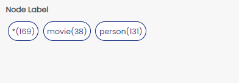
Above is a list of all the edges that exist in the graph of the currently connected DB. The number in the parentheses “()” shows the number of edges. Item marked with “*” refers to all edges. Unlike a node with a round box, an edge is shown in a rectangular box.
**Properties
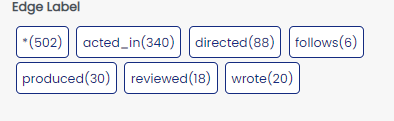
Above is a list of all the properties that exist in the graph of the currently connected DB. Property is shown in a grey rectangular box.